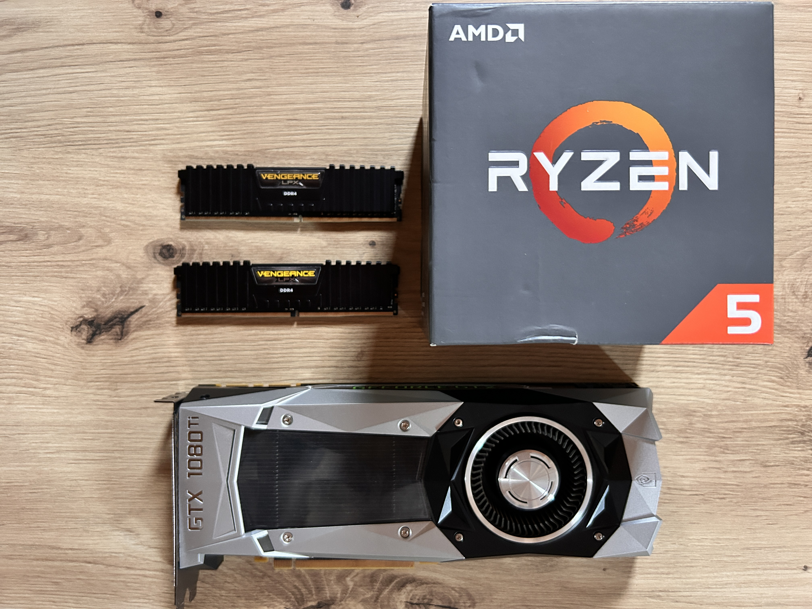

There’s a very specific kind of satisfaction that comes from building a computer with your own hands. You line up the parts, you slot things into place, you wrestle with cables, and then — you press the power button and it actually works. For me, there’s nothing quite like it.
I’ve been accumulating PC parts over the years. Old upgrades, components from sold systems, a few impulse buys that ended up gathering dust in anti-static bags. Rather than let them sit there, I decided it was time to put together a proper desktop from these spare parts. The result is a surprisingly capable machine that handles gaming, video editing, and everyday productivity without breaking a sweat.
This post walks through the entire build process. Whether you’re a first-time builder looking for a guide or an experienced tinkerer who just wants to see what came together, I hope you find it useful.

All components for the build spread out and ready to assemble.
The Parts List
Here’s everything that went into this build. I’ll include specs and a few notes on each component.
| Component | Part | Notes |
|---|---|---|
| CPU | AMD Ryzen 5 1600 | 6-core / 12-thread, 3.2 GHz base, 3.6 GHz boost, 65W TDP |
| Cooler | AMD Wraith Stealth | Stock cooler, included with the CPU |
| Motherboard | MSI B350M Mortar Arctic | mATX, AM4 socket, white-themed PCB |
| RAM | Corsair Vengeance DDR4 3000MHz (2×8GB) | 16GB total, dual-channel |
| GPU | NVIDIA GeForce GTX 1080 Ti | 11GB GDDR5X, ~268mm long |
| Storage | Samsung 970 EVO 500GB | NVMe M.2, ~3500 MB/s read |
| PSU | Makki 700W | Budget brand, 700 Watt |
| Case | Fractal Design Define Mini C | mATX, excellent acoustics |
A few quick thoughts on these choices. The Ryzen 5 1600 is a first-generation Ryzen chip, and while it’s not the newest thing on the market, six cores and twelve threads are still more than enough for gaming and general work. Paired with a GTX 1080 Ti — which remains a genuinely powerful GPU even today — this system can still push high settings in most modern titles at 1080p and 1440p.
The motherboard is a fun pick. The MSI B350M Mortar Arctic is a white-themed board that looks fantastic. I’ll talk more about the BIOS situation in the build steps, but it’s a solid board with good VRMs and a built-in M.2 heatsink.
A note on the PSU: The Makki 700W is a budget-brand power supply. It works, and 700W is plenty of headroom for this build, but I want to be upfront — the power supply is the one component where I genuinely recommend spending a bit more. A quality PSU from a brand like Seasonic, Corsair, or be quiet! protects all your other components. If you’re building from scratch, don’t skimp here. For this build, I was working with what I had, and it’s been stable. Just know the trade-off.
Tools You’ll Need
You don’t need much to build a PC. In fact, most of the tools are things you probably already have:
- Phillips head screwdriver — A #2 Phillips is the workhorse of PC building. Get one with a comfortable grip.
- Zip ties — For cable management. The case may come with a few, but having extras is always good.
- A well-lit, clean workspace — A desk or table with good lighting. Avoid carpeted surfaces to reduce static risk.
- Antistatic precautions — You don’t necessarily need an antistatic wrist strap, but do touch an unpainted metal surface (like the PSU chassis) before handling components to discharge any static buildup.
That’s it. No special tools, no soldering iron, no magic. Just a screwdriver and some patience.
The Build
Step 1: Prepare Workspace and Gather Parts
Lay everything out on your workspace. Open all the boxes and verify that you have every component. This is also a good time to read through any quick-start guides that came with the motherboard and case.
I like to keep the motherboard box handy — you can actually place the motherboard on top of its own box for the initial component installation. The box is non-conductive and makes it easy to work on the board before it goes into the case.
Step 2: Install CPU on Motherboard
The AMD Ryzen 5 1600 uses the AM4 socket. Here’s how to install it:
- Remove the motherboard from its box and place it on a non-conductive surface (the motherboard box works perfectly).
- Lift the retention arm on the CPU socket and raise the metal cover.
- Align the CPU by matching the gold triangle on one corner of the processor with the triangle marking on the socket.
- Gently place the CPU into the socket — it should drop in with zero resistance. Do not force it. If it doesn’t seat easily, lift it out and try again with proper alignment.
- Lower the metal cover back over the CPU and secure the retention arm.
Important BIOS note: The B350 chipset originally launched before the Ryzen 1600 (Summit Ridge) was released. This means the motherboard’s BIOS almost certainly needs an update before it will recognize the CPU. The MSI B350M Mortar Arctic does not support USB BIOS Flashback, so you’ll need a compatible older CPU (such as a Ryzen 3 1200 or Ryzen 5 1400) to perform the update. Install that CPU first, flash the BIOS via M-Flash in the BIOS menu, then swap in the Ryzen 5 1600. If you don’t have access to an older CPU, you may need to borrow one or look for a board that supports CPU-less BIOS updates.

Ryzen 5 1600 seated in the AM4 socket. Note the alignment triangle.
Step 2b: Install the CPU Cooler
Install the cooler before putting the motherboard in the case — it’s much easier to work with on a flat surface.
- The Wraith Stealth comes with thermal paste pre-applied on the base. Peel off the protective plastic film. Don’t skip this step — it’s easy to miss the thin, nearly transparent film.
- Align the cooler’s mounting brackets with the four pre-installed retention modules on the motherboard.
- Press down on the cooler and secure it with the four provided screws. Tighten them in a diagonal (X) pattern, a little at a time, to ensure even pressure.
- Route the cooler’s fan cable to one of the
CPU_FANheaders on the motherboard.
Why install the cooler now: Mounting the cooler after the motherboard is in the case is awkward and risky. You have less leverage, limited visibility, and you risk bending pins or dropping screws into the case. Do it while the board is still on the box.
Step 3: Install RAM
Installing RAM is straightforward:
- Locate the DIMM slots on the motherboard. For a two-stick configuration, the recommended slots are typically DIMM_A2 and DIMM_B2 (the second and fourth slots from the CPU). Check your motherboard manual for the exact recommendation.
- Push down the retention clips on both ends of the chosen slots.
- Align the off-center notch on the bottom edge of each RAM stick with the notch in the slot. DDR4’s asymmetric keying means it will only fit one way.
- Press down firmly and evenly on both ends of the stick until the retention clips click into place.
The Corsair Vengeance sticks installed cleanly. Once seated, the motherboard should recognize 16GB of RAM running in dual-channel mode. During the first boot, the RAM will run at its default JEDEC speed (likely 2133 or 2400 MHz). You’ll want to enable XMP in the BIOS afterward to get the full 3000 MHz rated speed.
Step 4: Install M.2 SSD
The Samsung 970 EVO 500GB is an NVMe M.2 SSD, which plugs directly into the motherboard — no cables needed.
- Locate the M.2 slot on the MSI B350M Mortar Arctic. This board has an M.2 heatsink that comes pre-installed on the board.
- Remove the heatsink by unscrewing the thermal pad bracket. Set the heatsink aside — don’t lose the thermal pad!
- Insert the SSD into the M.2 slot at a 30-degree angle. The gold contacts should face down, and the notch on the SSD should align with the key in the slot.
- Press the SSD down flat and secure it with the small screw provided.
- Reattach the M.2 heatsink, making sure the thermal pad makes good contact with the SSD’s controller chip.
Why the heatsink matters: The Samsung 970 EVO is known to run warm under sustained loads — it can easily hit 60-70°C without cooling. The B350M Mortar Arctic’s built-in M.2 heatsink is a welcome feature here. It keeps temperatures in check and prevents thermal throttling, which would otherwise reduce your SSD’s performance.

Both RAM sticks in DIMM slots and the NVMe SSD secured with the M.2 heatsink.
Step 5: Mount Motherboard in Case
With the CPU, cooler, RAM, and SSD installed, it’s time to put the motherboard into the Fractal Design Define Mini C.
- Install the I/O shield into the back of the case if it isn’t already pre-installed. The Define Mini C comes with a pre-installed shield, which saves a step.
- Check that the standoff positions in the case match the mATX mounting holes on the motherboard. The Define Mini C supports both ATX and mATX boards, so you may need to adjust or add standoffs.
- Carefully lower the motherboard into the case, aligning the ports with the I/O shield and the mounting holes with the standoffs.
- Secure the motherboard with the provided screws. Don’t overtighten — snug is enough.
The white PCB of the B350M Mortar Arctic looks really clean inside the Define Mini C. This case is all about understated, clean design, and the Arctic board fits right in.

The white Arctic motherboard contrasts nicely inside the Define Mini C.
Step 6: Install PSU
The Makki 700W PSU mounts at the bottom of the Define Mini C, with the fan facing downward to pull cool air from the case’s bottom intake.
- Orient the PSU with the fan facing down. This case has a removable dust filter on the bottom, so having the fan face down lets it pull fresh air directly from outside the case.
- Slide the PSU into the mounting area from the front of the case.
- Secure it with four screws from the back panel.
- Before routing cables, identify which cables you’ll need:
- 24-pin ATX — Main power to the motherboard
- 8-pin EPS — CPU power
- 8-pin PCIe (2×4 or 6+2 pin) — GPU power. Most GTX 1080 Ti models need one 8-pin connector, but some (particularly reference/Founders Edition) require two. Check your card before you begin.
- SATA power — For any 2.5" or 3.5" drives (not needed for this build since we’re using only the M.2 SSD)
Route these cables through the case’s cable management channels before connecting them. The Define Mini C has good routing space behind the motherboard tray, which makes cable management much easier than in many small cases.
Step 7: Install GPU
The GTX 1080 Ti is a long card at approximately 268mm (about 10.5 inches). The Define Mini C supports GPUs up to roughly 310mm in length, so we have about 42mm of clearance — plenty of room.
- Remove the appropriate PCIe slot covers on the back of the case. The primary PCIe x16 slot is the one closest to the CPU, and you’ll need to remove three slot covers for a typical triple-fan GPU.
- Open the retention clip on the primary PCIe x16 slot.
- Align the GPU with the slot and press down evenly until it seats fully. You should hear a click from the retention clip.
- Secure the GPU to the case bracket with screws.
Double-check the length: Before installing, it never hurts to physically measure. Lay the GPU alongside the case interior to confirm it fits. The Define Mini C is compact, and while 268mm is well within the 310mm limit, it’s close enough that verifying gives you peace of mind.

The GTX 1080 Ti seated in the primary PCIe x16 slot.
Step 8: Cable Management and Connections
Now comes the part that separates a clean build from a rat’s nest. The Define Mini C is a great case for cable management, with plenty of space behind the motherboard tray and rubber grommets at strategic routing points.
Connect the following cables:
- 24-pin ATX — The large motherboard power connector on the right edge of the board.
- 8-pin EPS — The CPU power connector, located at the top-left of the motherboard near the CPU socket.
- 8-pin PCIe — The GPU power connector on the GTX 1080 Ti. (Remember to check whether your specific model needs one or two.)
- Front panel connectors — These are the small pins for the power switch, reset switch, HDD LED, and power LED. Refer to the motherboard manual for the exact pinout. This is usually the most tedious step, so take your time.
- USB 3.0 header — Connects the front USB 3.0 ports.
- USB 2.0 headers — If the case has additional front USB ports.
- Audio header — Connects the front panel headphone and microphone jacks.
- Fan connectors — Connect any case fans to the appropriate fan headers on the motherboard. The Define Mini C comes with a rear 140mm fan pre-installed.
Once all cables are connected, use zip ties to bundle and secure excess cable length behind the motherboard tray. The goal is to keep the front of the build clean and, more importantly, to maintain good airflow.
Step 9: First Boot and BIOS Check
The moment of truth. Before you press the power button, do a final visual inspection:
- Is the CPU cooler properly mounted and secured?
- Are both RAM sticks fully seated?
- Is the GPU firmly in the PCIe slot?
- Are all power cables connected?
- Is the 24-pin ATX connector fully seated? (This is the most commonly missed connection.)
If everything checks out, connect your monitor to the GPU (not the motherboard), plug in your keyboard and mouse, and press the power button.
On first boot, the system may take a minute or two to POST (Power-On Self-Test). This is normal, especially with the first-time memory training that DDR4 requires. Once you see the MSI splash screen, press Del to enter the BIOS.
In the BIOS, I recommend doing the following:
- Enable XMP — This sets your RAM to the rated 3000 MHz speed instead of the default 2133/2400 MHz.
- Verify CPU recognition — Confirm the Ryzen 5 1600 is detected and running at the correct speeds.
- Check temperatures — The CPU should be sitting around 30-40°C idle with the Wraith Stealth cooler.
- Verify boot order — Make sure the Samsung 970 EVO is set as the primary boot device.
- Update BIOS — If you skipped the BIOS update earlier (because you didn’t have an older CPU handy), you can update it now via M-Flash using a USB drive.

The finished build, ready for first boot!
Post-Build: OS, Drivers, and First Impressions
With the hardware sorted, it’s time to get the software running.
Installing the Operating System
I installed Windows 11 from a USB drive created with the Microsoft Media Creation Tool. The installation process is straightforward — boot from the USB, select the Samsung 970 EVO as the target drive, and follow the prompts. The NVMe drive is fast enough that the entire installation takes about 10-15 minutes.
Note on Windows 11 compatibility: The Ryzen 5 1600 is not on Microsoft’s officially supported CPU list for Windows 11. If the installer blocks you, you’ll need to bypass the CPU check — the most common method is using the Registry Editor trick during setup (adding the
AllowUpgradesWithUnsupportedTPMOrCPUvalue). The system runs Windows 11 fine despite the lack of official support, but Microsoft may not provide major version updates to unsupported systems in the future.
Drivers
After Windows is installed, you’ll need to install drivers. I handle this in the following order:
- Chipset drivers — Download the latest AMD chipset drivers from AMD’s website. This ensures Windows properly communicates with the motherboard.
- GPU drivers — Grab the latest Game Ready drivers from NVIDIA’s website. The GTX 1080 Ti is still well-supported.
- Audio drivers — The B350M Mortar Arctic uses a Realtek audio codec. Drivers are available from MSI’s support page.
- LAN drivers — The board has a Killer E2400 Gigabit Ethernet controller. Install these from MSI’s website as well.
- Samsung Magician — This utility lets you monitor the 970 EVO’s health, run firmware updates, and benchmark performance.
First Impressions
The build runs cool and quiet. The Fractal Design Define Mini C lives up to its reputation for acoustic dampening — even under load, this system is whisper-quiet. The Wraith Stealth cooler does an adequate job with the 65W Ryzen 5 1600, keeping idle temperatures in the low 30s°C and load temperatures well below 70°C during gaming.
The combination of the Ryzen 5 1600 and GTX 1080 Ti is a surprisingly potent pairing. In my testing, this system handles modern games at high settings in 1080p with ease, and it’s perfectly capable of 1440p gaming as well. For productivity tasks like video editing and photo processing, the six cores and twelve threads of the Ryzen 5 1600 provide smooth multitasking performance.
Performance Expectations
Here’s a realistic picture of what this build can do:
| Use Case | Expectation |
|---|---|
| 1080p Gaming (High settings) | 60-100+ FPS in most modern titles |
| 1440p Gaming (Medium-High) | 40-70 FPS, depending on the title |
| Video Editing (1080p/1440p) | Smooth timeline playback, reasonable render times |
| Web Browsing / Office Work | Instantaneous, no issues |
| Streaming | Capable with NVENC encoder on the 1080 Ti |
| Content Creation | Solid for photo editing, light 3D work |
The GTX 1080 Ti’s 11GB of VRAM is still a meaningful advantage over many modern mid-range cards. Games that are VRAM-heavy benefit from this, and it gives the card longevity that cards with 6-8GB of VRAM simply don’t have.
Conclusion
Building a PC from spare parts is one of the most rewarding things you can do in the hardware hobby. It’s cost-effective, it reduces e-waste, and the satisfaction of booting up a machine you assembled yourself is hard to beat.
This build — a Ryzen 5 1600 paired with a GTX 1080 Ti in a Fractal Design Define Mini C — is proof that older parts can still make a very capable system. It’s not the newest hardware, but it’s fast, quiet, and reliable. And best of all, it cost me nothing but the time it took to put it together.
If you’ve been sitting on a box of spare parts, I encourage you to take the plunge. The worst that can happen is that you learn something new, and the best case is that you end up with a perfectly good computer.
This is the first post on iLostMyAim, and I’m glad it’s about something I genuinely enjoy. More tech content, DIY projects, and the occasional vlog are on the way. Thanks for reading, and happy building.